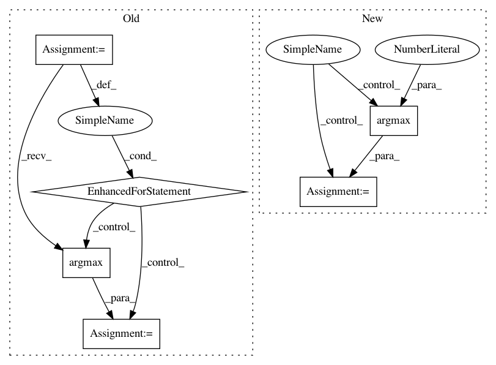

a7706fbde22887909db42f96a696437c084c05db,chainercv/evaluations/eval_detection_voc.py,,eval_detection_voc,#Any#Any#Any#Any#Any#Any#Any#Any#,11
Before Change
selec = np.zeros(gt_bbox_l.shape[0], dtype=bool)
for bb in pred_bbox_l:
if len(gt_bbox_l) > 0:
iou = bbox_iou(gt_bbox_l, bb[np.newaxis])
gt_idx = iou.argmax()
iou = iou[gt_idx]
else:
iou = -np.inf
if iou >= iou_thresh:
if gt_difficult_l[gt_idx]:
match[l].append(-1)
else:
if not selec[gt_idx]:
match[l].append(1)
else:
match[l].append(0)
selec[gt_idx] = True
else:
match[l].append(0)
for iter_ in (
pred_bboxes, pred_labels, pred_scores,
gt_bboxes, gt_labels, gt_difficults):
if next(iter_, None) is not None:
After Change
gt_bbox_l[:, 2:] += 1
iou = bbox_iou(pred_bbox_l, gt_bbox_l)
gt_index = iou.argmax(axis=1)
match_ = iou.max(axis=1) >= iou_thresh
del iou
selec = np.zeros(gt_bbox_l.shape[0], dtype=bool)
In pattern: SUPERPATTERN
Frequency: 3
Non-data size: 6
Instances
Project Name: chainer/chainercv
Commit Name: a7706fbde22887909db42f96a696437c084c05db
Time: 2017-05-31
Author: Hakuyume@users.noreply.github.com
File Name: chainercv/evaluations/eval_detection_voc.py
Class Name:
Method Name: eval_detection_voc
Project Name: pytorch/tnt
Commit Name: ba256835a4f33d9139a70b6440c3223123132bc8
Time: 2017-08-24
Author: swetha.tanamala@gmail.com
File Name: torchnet/meter/confusionmeter.py
Class Name: ConfusionMeter
Method Name: add
Project Name: chainer/chainercv
Commit Name: 5264565d8dd62d945c504999937d07dedd54e1ed
Time: 2017-06-07
Author: Hakuyume@users.noreply.github.com
File Name: chainercv/links/model/ssd/multibox_coder.py
Class Name: MultiboxCoder
Method Name: encode